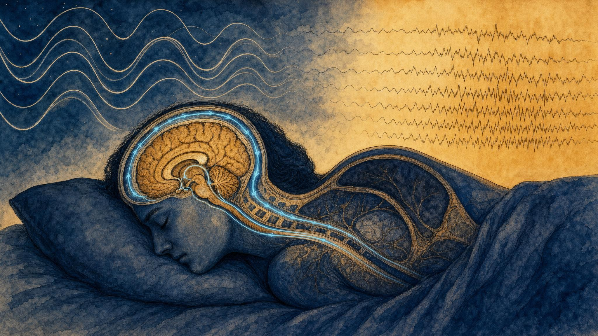
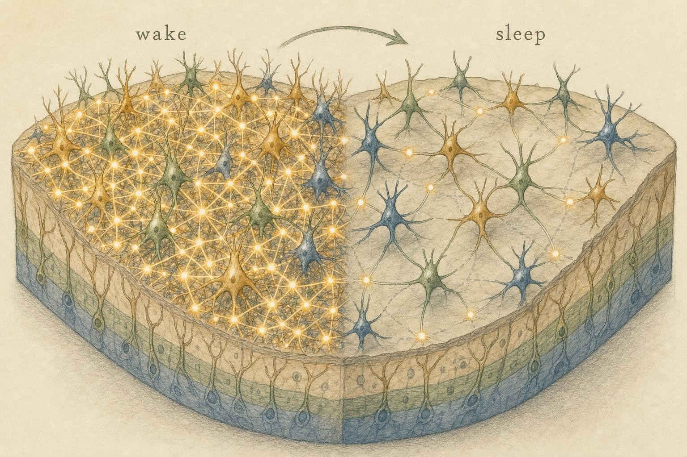

The Night Shift: How Rest Rebuilds the System
Sleep is not the brain switching off. It is the most coordinated maintenance operation the nervous system runs, and the place where every system this course has built finally clicks into place.
You spend roughly a third of your life unconscious, immobile, and, to any outside observer, profoundly unproductive. For most of the twentieth century, neuroscience broadly agreed with that observer. Sleep was treated as the off state, the passive interval when the day's activity subsided and the brain idled until morning. The metaphor was electrical: a light switched off, a machine powered down. It was tidy, intuitive, and almost entirely wrong.
We now know that some of the most intense, organized, and metabolically expensive activity the nervous system ever performs happens while you lie perfectly still. During deep sleep, millions of cortical neurons fall into slow, thunderous synchrony, firing and falling silent together in waves that sweep across the brain roughly once a second. During rapid eye movement (REM) sleep, your cortex lights up in patterns nearly indistinguishable from waking, while your body is paralyzed from the neck down. Fluid pumps through channels that were sealed shut all day, flushing out the metabolic debris of thinking. Memories formed hours earlier are replayed, sorted, and rewritten. This is not the system shutting down. This is the night shift.
Follow one learner through this final chapter. Halle is finishing this course the way she has finished most things this year: late, laptop balanced on her knees after the house has gone quiet. Somewhere across the last eight chapters she picked up a private theory, never quite stated out loud, that sleep is the one part of her day she can crop without cost. For three weeks she has been trimming forty minutes off each end of the night to fit in more study time, and she reports, genuinely, that she feels basically fine. Halle is not a patient and not a case study. She is a stand-in for a belief nearly everyone tests at some point in their life, that sleep is dead time you can borrow against. By the end of this chapter you will be equipped to check that belief far more carefully than Halle currently can, using nothing but the model this course has already given you.
The whole course, revisited in the dark
This is the final chapter, and it is deliberately a synthesis. Across eight chapters we assembled a working model of the nervous system piece by piece: the neuron and its electrical language of graded and action potentials; the divisions of the nervous system and the autonomic balance between sympathetic and parasympathetic branches; the stress and recovery systems that mobilize the body and then restore it; sensory processing and the way attention quiets some signals to amplify others; and finally neuroplasticity, the capacity of synapses to strengthen and weaken with experience.
Every one of those systems has a night job, and sleep is where they converge. The electrical signaling story scales up from single neurons to whole-brain rhythms. Autonomic balance swings decisively toward parasympathetic dominance and then oscillates back. The stress-and-recovery machinery quiets and hands the floor to genuinely restorative processes. Sensory gating, which by day protects attention from irrelevant noise, is repurposed to hold the sleeping brain largely offline from the outside world so that internal signals can be heard clearly. And plasticity, the very thing that makes learning possible, turns out to depend on sleep so completely that a single sleepless night measurably degrades the brain's capacity to change (Salehinejad et al., 2022). If you want to see how the pieces of this course fit together into one coherent organism, the clearest place to look is a person asleep.
A note on scope, stated plainly, because it will matter for the rest of this chapter. What follows is a working mental model for a learner, coach, or professional earning continuing education, not a course in clinical sleep medicine. We will not diagnose sleep disorders, and nothing here is a substitute for evaluation by a qualified clinician when sleep itself becomes the problem rather than the solution. What you will leave with is an integrated picture: the architecture of a night, why that architecture matters for both physical recovery and learning, and how the systems you already understand behave once the lights go out.

Sleep as active operation: slow synchronized rhythms and fast dreaming activity across one night." data-image-idx="0" style="display:block;max-width:100%;max-height:75vh;height:auto;width:auto;margin:0 auto;cursor:pointer;">The line we will not cross
Before we go further we should name the frame that has governed every chapter of this course, because a chapter about sleep is exactly the kind of material that tempts a reader toward self-diagnosis. Insomnia, sleep apnea, restless legs, and circadian rhythm disorders are real, common, and sometimes serious conditions, and several of them can look, at a glance, like ordinary variation in how someone sleeps. This chapter is not built to sort one from the other, and it would be dishonest to pretend otherwise.
What this chapter can do, honestly, is give you a working model of how a typical night is organized and why that organization matters for recovery and learning. If something in your own sleep, or in a learner's you are supporting, looks persistently disrupted rather than merely inconvenient, that is a question for a clinician, not a chapter. Halle's late nights, the ones we will follow through the rest of this chapter, are a scheduling problem layered on top of an otherwise healthy system. That is a very different situation from a sleep disorder, and the distinction is worth holding onto as you read.
From single spikes to whole-brain rhythms
In the first chapter of this course we treated the action potential as the atom of neural signaling, a single neuron crossing threshold and firing. That framing is correct but incomplete for understanding sleep, because sleep is fundamentally a phenomenon of populations. When you place recording electrodes on the scalp, the technique of electroencephalography (EEG), you are not listening to one neuron. You are hearing the summed electrical activity of billions, and what that summed signal reveals is rhythm.
Think of it this way. If every neuron in a cortical region fires at random moments, their contributions cancel out and the scalp signal is small and fast, a low-amplitude, high-frequency scribble. This is roughly what waking looks like: a busy, desynchronized brain doing many things at once. But if large populations of neurons begin to fire and fall silent together, in lockstep, their signals add up into large, slow deflections, high amplitude, low frequency. Synchronization is the signature of sleep, and the degree of synchronization is exactly what changes as you descend through the stages.
The stages, briefly
Sleep researchers divide sleep into two broad categories, non-rapid eye movement (NREM) sleep and REM sleep, with NREM sleep further split into stages that deepen in sequence (American Academy of Sleep Medicine, 2023). You do not need to memorize the scoring rules used in a sleep laboratory, but you should know the character of each stage, because each has a distinct rhythm and a distinct job.
N1, light transition. The doorway between waking and sleep, occupying only a small slice of a typical night. The fast, alert rhythm of waking gives way to slower activity, muscle tone relaxes, and a brief falling sensation is common. N1 is short and easily interrupted; wake someone here and they may deny they were asleep at all.
N2, the workhorse. You spend nearly half the night in this stage. N2 introduces two hallmark electrical events: sleep spindles, brief bursts of fast oscillation generated by the thalamus, and K-complexes, large solitary waves. Spindles are not idle noise. As we will see later in this chapter, they are central to how memories get consolidated, which is part of why a stage often dismissed as merely transitional is, in truth, doing quiet, essential work for most of the night.
N3, deep, slow-wave sleep (SWS). The deepest stage, dominated by slow-wave activity: large, slow oscillations, roughly zero point five to four cycles per second, in which vast cortical territories toggle between an active up state and a silent down state in unison. This is the hardest stage to be woken from, and it is where the body does its heaviest physical restoration. Slow-wave activity is also, crucially, the single best EEG marker of accumulated sleep pressure, a fact that will anchor the two-process model later in this chapter (Borbély et al., 2016).
REM, rapid eye movement sleep. The paradox stage. The cortical EEG looks fast and desynchronized, much like waking, yet the body's skeletal muscles are actively paralyzed, a state called atonia, the eyes dart beneath closed lids, and vivid dreaming predominates. REM sleep is where several forms of memory reorganization occur, and, as the next section shows, its autonomic profile is strikingly unlike deep sleep.
The architecture: why it cycles
Here is the part that surprises most people. You do not descend into deep sleep and stay there until morning. Instead, sleep is organized into cycles of roughly ninety minutes each, a descent from light sleep into deep NREM sleep and then an ascent back up into REM sleep. A typical night contains four to six such cycles, but they are not identical. The composition shifts across the night in a way that is purposeful rather than random.
Early cycles are rich in N3 slow-wave sleep. This is when homeostatic sleep pressure is highest, and the brain spends its deepest currency first: physical recovery and the most demanding memory processing happen in the first third of the night. As the night proceeds, N3 shrinks and REM periods lengthen, so the last cycles before waking are dominated by REM sleep and lighter NREM sleep. This is why the dreams people remember tend to come from the early morning, and why cutting a night short by a few hours disproportionately removes REM sleep rather than deep sleep. Halle's forty minutes trimmed off each end of the night were never evenly priced. The minutes she loses at the end, closest to her alarm, are drawn overwhelmingly from the REM-rich final cycles, the ones this chapter will later connect to integrating what she has just spent the evening studying.
It also helps to notice what a single cycle is not. It is not a fixed, interchangeable unit that can be counted like currency, four good cycles being simply better than three. The first cycle of the night and the last cycle of the night are doing almost opposite jobs, one weighted toward deep, slow, parasympathetic-heavy repair, the other weighted toward fast, autonomically volatile, REM-rich integration. A night assembled from five identical light-sleep cycles would satisfy a clock but not the underlying biology, because neither job would get done properly. The shape of the night, not merely its total length, is doing the work.
Deep sleep and the return of the parasympathetic
Recall the autonomic balance introduced earlier in this course. During waking, and especially during stress, the sympathetic branch dominates: heart rate rises, pupils dilate, blood is shunted to muscle, and digestion is suspended. The parasympathetic branch, the rest-and-digest system carried largely by the vagus nerve, is the counterweight that slows the heart and restores the body's housekeeping functions. Across a normal day the two branches trade influence moment to moment, never fully off, just leaning one way or the other.
Deep NREM sleep is the most parasympathetically dominant state you routinely enter. Heart rate slows to its nightly minimum, blood pressure falls, breathing becomes slow and regular, and the measures that reflect vagal control, such as high-frequency heart rate variability (HRV), climb. Trinder and colleagues, tracking cardiac autonomic activity across full nights in healthy adults, documented exactly this pattern: parasympathetic activity rises as sleep deepens from N1 through slow-wave sleep, while sympathetic activity falls in step (Trinder et al., 2001). This is the physiological substrate of what people mean when they call deep sleep restorative. Growth hormone is secreted in pulses timed to early-night slow-wave sleep, and tissue repair, immune signaling, and metabolic housekeeping proceed under parasympathetic cover. If an earlier chapter taught you that recovery is an active parasympathetic accomplishment rather than the mere absence of stress, deep sleep is that lesson written large across the whole body.
REM sleep breaks this pattern in an instructive way. Trinder's data, and the broader literature it belongs to, show autonomic control during REM sleep becoming irregular and, at times, storm-like: heart rate and breathing surge and fall, blood pressure fluctuates, and sympathetic activity can spike toward levels closer to waking than to slow-wave sleep. The tidy parasympathetic calm of deep sleep does not persist through the night. This autonomic volatility is one reason REM sleep is sometimes called paradoxical sleep: the body's regulation looks anything but restful, even as the skeletal muscles lie paralyzed.
None of this is incidental variation. It is a schedule. The steepest, most reliable drop in heart rate and blood pressure of the entire twenty-four-hour day happens in the first slow-wave-heavy cycles of a normal night, and the sharpest autonomic swings of the day happen in the REM-heavy cycles that follow. A cardiovascular system that never reached this nightly low point, because sleep was shallow, fragmented, or simply too short to reach deep N3, would be missing a genuine daily reset rather than an optional bonus.
The brain cleans itself: the glymphatic discovery
One of the most striking findings in recent sleep science reframes what physical recovery means for the brain itself. In a landmark 2013 study in mice, Xie and colleagues showed that sleep is associated with a roughly sixty percent expansion of the interstitial space, the fluid-filled gaps between brain cells. That expansion dramatically increases the flow of cerebrospinal fluid through brain tissue, driving what the authors called the glymphatic system: a convective exchange that flushes metabolic waste, including the amyloid-beta protein implicated in neurodegeneration, out of the brain (Xie et al., 2013).
The clearance rate during sleep was roughly double that of the waking state. The interpretation is almost startling in its simplicity: a meaningful part of what makes sleep restorative may be that the brain cannot wash itself as efficiently while it is awake. The waste of a day's thinking accumulates, and the night shift takes it out. The finding was made in mice, and the details of the human glymphatic system are still being worked out, but it gave physical, mechanical substance to the old intuition that a good night's sleep clears your head. Halle's late study sessions push her waking hours later without pushing her wake time later to match, which quietly shortens the window available for this washing cycle to run its course.
Sleep is not simply a period when brain activity quiets down. It appears to be a distinct working state in which the brain actively clears the metabolic waste that accumulates during waking hours, at a rate roughly double what the awake brain manages.
Summarizing Xie et al. (2013), Science
The night as the price of plasticity
Now we connect sleep to the plasticity chapter. Plasticity, the strengthening and weakening of synaptic connections, is how experience physically changes the brain. But plasticity has a hidden cost, and a leading theory of why we sleep addresses it directly.
Tononi and Cirelli's synaptic homeostasis hypothesis (SHY) begins with a problem. During waking, as you learn and interact with the world, synapses across the brain tend, on net, to strengthen. Strengthening is metabolically expensive, consumes cellular resources, occupies space, and, critically, cannot continue indefinitely. A brain whose synapses only ever grew stronger would eventually saturate: every connection loud, none distinct, the signal drowning in noise, with no room left to encode anything new (Tononi & Cirelli, 2014).
SHY proposes that sleep, and slow-wave sleep in particular, is when the brain solves this by renormalizing. The slow oscillations of deep sleep drive a broad, proportional downscaling of synaptic strength, a global turning down of the volume that preserves the relative differences between connections while restoring absolute strength to a sustainable baseline. Sleep, in this view, is the price the brain pays for plasticity, the recovery process that keeps learning possible day after day. As a side effect of this renormalization, weakly encoded, irrelevant traces fade while robustly encoded ones survive in relief, a passive contribution to memory that complements the active processes we meet in the next section.
There is now direct human evidence for a version of this claim. Salehinejad and colleagues (2022) kept participants awake for one night and measured cortical physiology and cognition. Sleep deprivation upscaled cortical excitability, more glutamate-driven facilitation and less activity mediated by gamma-aminobutyric acid (GABA), consistent with a brain whose synapses had not been renormalized. In that hyperexcitable, saturated state, the capacity for new plasticity was blunted: both long-term potentiation (LTP)-like and long-term depression (LTD)-like changes were impaired, along with learning, memory formation, working memory, and attention. The brain that skips its night shift is not simply a tired brain running on less fuel. It is a brain that has partially lost the ability to change itself effectively, at exactly the moment Halle is asking hers to absorb new material.

The synaptic homeostasis hypothesis: waking strengthens and crowds; sleep renormalizes and clears." data-image-idx="1" style="display:block;max-width:100%;max-height:75vh;height:auto;width:auto;margin:0 auto;cursor:pointer;">How a memory gets locked in overnight
The passive account, weak traces fading as strong ones survive downscaling, is only part of the story. The past decade has established that sleep also does something active and remarkably precise. Rasch and Born's landmark review documented the field's shift from older passive protection theories, in which sleep merely shielded fragile memories from interference, to active systems consolidation, in which the sleeping brain deliberately replays and redistributes what it learned (Rasch & Born, 2013).
The core idea concerns two memory stores. New declarative memories, facts, events, the name of a person met at lunch, are initially encoded rapidly by the hippocampus, a fast but temporary buffer. For a memory to become durable it must be gradually transferred into the distributed circuits of the neocortex, the slow but vast long-term store. Sleep is when that transfer happens, and it happens through the coordinated interplay of three nested electrical rhythms.
Three rhythms, precisely coupled
Staresina (2024) and Marshall and colleagues (2020) describe the choreography with growing precision. Consolidation during NREM sleep depends on the tight coupling of three oscillations across brain regions.
Slow oscillations, the roughly one-cycle-per-second waves of deep sleep generated in the cortex, set the tempo. Their up states open brief, global windows of cortical excitability, moments when the cortex is ready to receive information.
Sleep spindles, the thalamic bursts characteristic of N2, ride on the slow-oscillation up states and act as relays, partially reactivating the specific cortical networks that were engaged during learning.
Hippocampal sharp-wave ripples, brief, very fast bursts in the hippocampus, carry compressed replays of the day's experiences and are timed to nest inside the spindles, driving a hippocampal-cortical exchange that strengthens and reorganizes the memory trace.
The order matters: the slow oscillation opens the window, the spindle relays the address, and the ripple delivers the content. When these three rhythms are precisely phase-locked, memory consolidation is strongest; when the coupling degrades, as it does with age, consolidation suffers. Staresina (2024) frames this coupling as a kind of timing problem as much as an amplitude problem: it is not simply that older brains generate weaker slow oscillations or fewer spindles, it is that the precise nesting of spindle inside slow-oscillation up state, and ripple inside spindle, drifts out of alignment, and the memory benefit degrades even when each rhythm is still individually present. This is the mechanistic heart of what people mean when they say they slept on it. The plastic changes built while awake, the subject of an earlier chapter, are not automatically permanent. They are provisional until the night shift replays them into cortex.
REM sleep plays a complementary role. While slow-wave sleep excels at consolidating hippocampus-dependent declarative memories, REM sleep and the lighter stages surrounding it appear especially important for procedural and emotional memories and for integration, the creative recombination that can leave a person waking with a solution they did not have the night before (Marshall et al., 2020; Rasch & Born, 2013). This is why the shifting architecture of the night is not incidental. The early-night dominance of deep sleep and the late-night dominance of REM sleep mean that different consolidation jobs get their turn in sequence, and neither can simply substitute for the other. Halle mentioned, almost in passing, that she sometimes wakes with a cleaner answer to a problem she could not solve the night before. That is not a coincidence or a mood. It is very likely the late-night REM sleep she has been shortening, doing exactly the integrative work this section describes.
Two forces decide when you sleep
We have described what sleep does. But what determines when a person feels sleepy in the first place? The dominant framework, elegant, durable, and now more than forty years old, is the two-process model of sleep regulation, formalized by Borbély and colleagues and recently revisited by its original author (Borbély et al., 2016; Borbély, 2022).
Process S, homeostatic sleep pressure. The longer a person is awake, the greater the pressure to sleep. This is a homeostatic drive, building steadily across the waking day and discharging during sleep, fastest during the deep slow-wave sleep of the early night. Its strength as a model is that it has a measurable biomarker: slow-wave activity in the NREM EEG rises with prior time awake and dissipates across the night, tracking Process S almost exactly. Sleep pressure is not a metaphor. It is something visible in the electrical rhythm of the brain.
Process C, the circadian rhythm. Independently of how long someone has been awake, an internal clock, the roughly twenty-four-hour circadian rhythm generated in the hypothalamus and entrained chiefly by light, sets a daily oscillation in alertness. Process C is not a simple get-sleepy-at-night signal. Counterintuitively, it produces a strong wake-promoting drive in the evening, sometimes called the wake maintenance zone, that rises to oppose the mounting sleep pressure, and it reaches its alerting low in the early hours of the morning.
Sleepiness at any given moment is the interaction of the two, and that interaction is non-linear, a point the model's authors emphasize in their reappraisal (Borbély et al., 2016; Borbély, 2022). Two familiar experiences fall directly out of the interplay.
The afternoon dip. In early to mid afternoon, homeostatic pressure has built substantially since morning, but the circadian alerting signal has not yet risen to its evening peak. The gap between the two widens, sleepiness surfaces, and the mid-afternoon slump appears, no heavy lunch required to explain it.
The evening second wind. Later, even though a person has been awake even longer and Process S is higher still, the circadian wake maintenance zone surges to its peak and masks the pressure. Someone can feel alert at nine in the evening despite sixteen hours awake, because the clock is holding the door open. When that circadian drive finally falls away, the accumulated pressure floods in and sleep arrives quickly.
Why a late nap wrecks the night
The model also explains something practical. A nap discharges homeostatic pressure, it lets Process S bleed off early. A short midday nap taken during the afternoon dip can restore alertness at little cost, because plenty of pressure will rebuild before bedtime. But a long or late-afternoon nap discharges too much of the very pressure needed to fall asleep at night. A person then arrives at bedtime with low Process S, meeting a circadian wake maintenance zone that has not yet released, and lies awake. The nap did not so much give energy as spend sleep pressure early. Light exposure compounds this. Bright light in the evening delays the circadian clock, pushing the wake maintenance zone later and further postponing the moment the two forces finally align for sleep.
This is, in miniature, Halle's other habit. Twice a week, to survive an evening study session, she has been taking a long nap around five in the afternoon, right when the model above predicts it will do the most damage to that night's sleep onset. She reads the resulting late bedtime as more proof that late nights are simply who she is now. The two-process model offers a less fatalistic explanation: the nap, not her character, is doing most of the work.
It is worth adding one honest caveat before moving on. The two-process model describes a strong, well-replicated average pattern, but the exact clock times attached to the wake maintenance zone shift somewhat from person to person, a difference popularly discussed as chronotype, the tendency toward being more of a morning or an evening person. This chapter is not the place to map an individual's precise circadian phase, and nothing here should be read as a claim that everyone's afternoon dip or evening second wind lands at the identical hour. The mechanism, two forces interacting non-linearly, is the durable, general part of the model. The exact clock face it draws on any one person is a separate question, and a more individual one.
The whole system, in one night
Step back and watch the model this course has built run through a single night, all systems at once.
Evening: the circadian wake maintenance zone finally releases, and the accumulated Process S floods in. Sleep descends through N1 and N2 into the deep slow-wave sleep of the first cycles. The electrical signaling introduced early in this course has scaled into whole-brain synchrony. Autonomic balance swings hard toward parasympathetic dominance; heart rate and blood pressure fall to their nightly floor; growth hormone pulses; the glymphatic channels open and the brain begins to wash out the day's metabolic debris (Xie et al., 2013). Meanwhile the slow oscillations, spindles, and hippocampal ripples couple in their precise sequence, replaying the day's declarative memories into cortex, while global synaptic strength is renormalized to keep tomorrow's learning possible (Tononi & Cirelli, 2014; Staresina, 2024).
As the night proceeds, Process S discharges, N3 shrinks, and REM sleep lengthens. Autonomic control becomes volatile; the cortex lights up while the body lies paralyzed; procedural and emotional memories are processed and new knowledge is integrated with old. By the final cycles the sleeper is mostly in REM sleep and light sleep, dreams vivid, and the circadian alerting signal is climbing back toward its morning rise. Waking arrives with the system cleaned, rebalanced, and with yesterday's provisional learning now more durably held.
This is the sense in which sleep is the grand synthesis of the course. The nervous system that senses, decides, and acts by day is the same system that recovers, rewires, and rests by night. Nothing in that description is idle. The night shift is where the working model finally becomes a working organism, one that cannot learn without also sleeping, because in this system remembering and resting turn out to be the same operation seen from two different sides.
Notice, too, how little of this required a new organ or a new mechanism. Sleep does not introduce some separate maintenance module bolted onto the nervous system described in the rest of this course. It runs the same neurons, the same autonomic branches, the same synapses, the same hippocampus and cortex, simply in a different mode, tuned by a different balance of the same signals that govern the waking day. That reuse is, in its own way, the tidiest argument against the old off-switch metaphor. A system cannot be switched off and simultaneously be running its most demanding, most tightly coordinated program of the entire twenty-four hours.
What this means for a learner's own night
It would be tidy to end there, but the honest version of this chapter includes what a learner does with all of this the next time an exam, a deadline, or simply a long day tempts them to treat sleep as the flexible line item in a schedule. None of what follows is a protocol or a prescription. It is the same working model, pointed at Halle's actual week, and it should be read as a starting point for a learner's own thinking rather than a fixed rule.
A consistent wake time anchors Process C more reliably than a consistent bedtime does, because the circadian clock is entrained largely by light exposure at a predictable point each day. Protecting the last two hours of a typical night matters more than the popular framing of a single target number of hours suggests, because those final cycles are the ones carrying most of the REM sleep this chapter has connected to integration and procedural learning. A short nap early in the afternoon costs little; a long one in late afternoon spends sleep pressure that the coming night needs. Bright light in the hours before bed pushes the circadian wake maintenance zone later, which is simply the two-process model applied to a laptop screen at eleven at night.
There is also a scheduling lesson buried in the memory-consolidation section above. If the goal is to hold onto specific facts, cramming right before a full night of sleep gives the slow oscillation, spindle, and ripple sequence fresh material to work with during the very first cycles, when that coupling is strongest. If the goal is to integrate material, to see how a new idea connects to something learned earlier, the REM-rich final cycles are doing more of that work, which is one more reason a shortened morning costs a learner something different than a shortened evening does. Neither pattern is right for every situation. The point is that the two are not interchangeable, and a learner who understands why can make a more informed trade than Halle was making when she assumed all sleep hours were the same hour.
Halle's plan, once she worked through this chapter, was not dramatic. She moved her cutoff for new material an hour earlier, kept her wake time fixed, swapped the five o'clock nap for a shorter one at one in the afternoon, and dimmed her screen after dinner. She is not sleeping more out of virtue. She is sleeping in a way that lets the specific mechanisms in this chapter actually run: the parasympathetic recovery of the early cycles, the synaptic renormalization of slow-wave sleep, and the REM-dependent integration of the final hour she used to sacrifice first.
Key Takeaways
- Sleep is an active, organized, metabolically expensive operation, not the brain switching off. It is the nervous system's maintenance shift, and its rhythms are among the largest, most synchronized electrical signals the brain ever produces.
- Sleep cycles roughly every ninety minutes through NREM stages (N1, N2, N3) and REM sleep, each with a distinct EEG rhythm: deep sleep is slow and highly synchronized, REM sleep is fast and waking-like. Deep sleep dominates early cycles; REM sleep dominates later ones.
- Deep NREM sleep is the most parasympathetically dominant state a person routinely enters, the physiological substrate of physical recovery, growth hormone release, and, through the glymphatic system, the clearance of metabolic waste from the brain (Xie et al., 2013; Trinder et al., 2001).
- REM sleep is autonomically volatile rather than restful in the cardiovascular sense, with sympathetic activity rising toward waking levels even as the muscles remain paralyzed. Deep sleep and REM sleep do different jobs; neither is filler.
- Sleep is the price the brain pays for plasticity: slow-wave sleep renormalizes synaptic strength so learning remains possible, and losing a night measurably upscales excitability while blunting the capacity for new plasticity (Tononi & Cirelli, 2014; Salehinejad et al., 2022).
- Memory is actively consolidated through the precise coupling of slow oscillations, spindles, and hippocampal ripples, transferring declarative memories from hippocampus to cortex; REM sleep supports procedural, emotional, and integrative processing (Rasch & Born, 2013; Staresina, 2024; Marshall et al., 2020).
- The two-process model explains sleep timing: homeostatic pressure (Process S) builds with wakefulness while the circadian rhythm (Process C) oscillates independently. Their non-linear interaction produces the afternoon dip, the evening second wind, and the way a late nap can spend the pressure a person needs for night sleep (Borbély et al., 2016; Borbély, 2022).
- This is a working model for education, not a diagnostic tool. Persistent, disruptive sleep problems belong to a qualified clinician, not a self-assessment built from one chapter.
This is where the course ends, deliberately, where the day does. You now hold an integrated working model of a nervous system that senses, decides, acts, recovers, rewires, and rests. Carry it forward not as nine separate chapters but as one connected picture. The next time you feel the afternoon dip, catch a second wind, or wake with a problem quietly solved, you will recognize the same signaling body at work, running its night shift so the day shift can begin again. Halle's laptop still closes late some nights. But she now knows what that costs, what it does not cost, and, more importantly, what the hour she protects is actually buying her.
References
American Academy of Sleep Medicine. (2023). The AASM manual for the scoring of sleep and associated events: Rules, terminology and technical specifications (Version 3). American Academy of Sleep Medicine.
Borbély, A. A., Daan, S., Wirz-Justice, A., & Deboer, T. (2016). The two-process model of sleep regulation: A reappraisal. Journal of Sleep Research, 25(2), 131-143. https://doi.org/10.1111/jsr.12371
Borbély, A. (2022). The two-process model of sleep regulation: Beginnings and outlook. Journal of Sleep Research, 31(4), e13598. https://doi.org/10.1111/jsr.13598
Marshall, L., Cross, N., Binder, S., & Dang-Vu, T. T. (2020). Brain rhythms during sleep and memory consolidation: Neurobiological insights. Physiology, 35(1), 4-15. https://doi.org/10.1152/physiol.00004.2019
Rasch, B., & Born, J. (2013). About sleep's role in memory. Physiological Reviews, 93(2), 681-766. https://doi.org/10.1152/physrev.00032.2012
Salehinejad, M. A., Ghanavati, E., Reinders, J., Hengstler, J. G., Kuo, M.-F., & Nitsche, M. A. (2022). Sleep-dependent upscaled excitability, saturated neuroplasticity, and modulated cognition in the human brain. eLife, 11, e69308. https://doi.org/10.7554/eLife.69308
Staresina, B. P. (2024). Coupled sleep rhythms for memory consolidation. Trends in Cognitive Sciences, 28(4), 339-351. https://doi.org/10.1016/j.tics.2024.02.002
Tononi, G., & Cirelli, C. (2014). Sleep and the price of plasticity: From synaptic and cellular homeostasis to memory consolidation and integration. Neuron, 81(1), 12-34. https://doi.org/10.1016/j.neuron.2013.12.025
Trinder, J., Kleiman, J., Carrington, M., Smith, S., Breen, S., Tan, N., & Kim, Y. (2001). Autonomic activity during human sleep as a function of time and sleep stage. Journal of Sleep Research, 10(4), 253-264. https://doi.org/10.1046/j.1365-2869.2001.00263.x
Xie, L., Kang, H., Xu, Q., Chen, M. J., Liao, Y., Thiyagarajan, M., O'Donnell, J., Christensen, D. J., Nicholson, C., Iliff, J. J., Takano, T., Deane, R., & Nedergaard, M. (2013). Sleep drives metabolite clearance from the adult brain. Science, 342(6156), 373-377. https://doi.org/10.1126/science.1241224